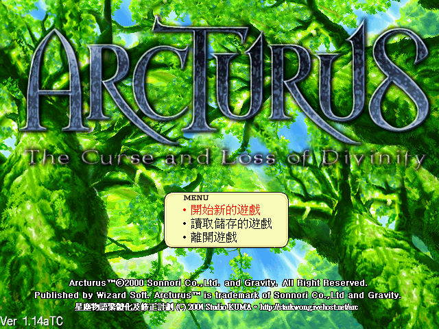

保護：光碟，破解碼： ArcExe.exe 85 C0 75 2B 8B 85 -- -- 90 90 -- -- 備註：VirtualBox無法正常執行，虛擬機請使用VMware+DxWnd（可全螢幕）。 備註：簡中版安裝後為1.13版。 備註：繁化檔請拷貝到本機後再安裝，安裝完後請確認data子目錄裡是否有中文檔名的檔案 （亂碼），若沒有的話，進入遊戲仍會是簡體中文。 檔案：ArcPatch114a.rar = 1.14a更新檔（版本仍顯示1.13版） trad_050213.rar = 小熊工作室的繁化檔（已包含更新檔內容） 操作： 滑鼠左鍵/方向鍵 = 移動 滑鼠左鍵/Alt = 動作（如交談） 滑鼠右鍵/QW = 旋轉視角 AZ = 縮放視角 Ctrl = 確定／跳躍 滑鼠右鍵按自己/F2 = 人物欄 F3/F4 = 地點方向指示 F5 = 顯示俯瞰圖 F9 = 截圖 Esc = 離開遊戲 說明：與旅館老闆交談才能存檔。